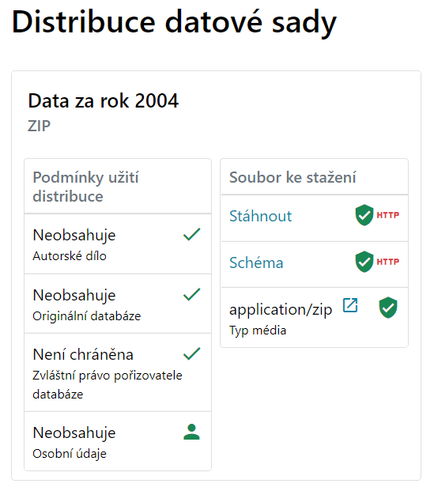
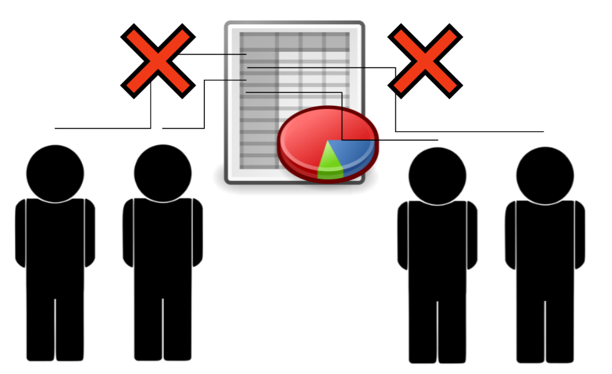

Podmínky užití
V tomto modulu získáme přehled o otázkách, které se týkají podmínek
užití v kontextu otevírání dat organizace.
Ukážeme si, kterých zákonů se
zveřejňování dat může dotýkat a představíme si jeden z
možných postupů, jak stanovit otevíraným sadám adekvátní
licence. Standardizované podmínky užití jsou k dispozici – je
velmi vhodné používat právě ty.
V modulu jde především o sadu doporučení v
této oblasti – modul nenahrazuje práci právníků.
Proč jsou podmínky užití důležité?
- Uživatelé potřebují vědět, jak mohou
publikovaná data využít a mít jistotu, že je nepoužívají
nesprávným způsobem.
- Neuvážené publikování dat může
vést k porušení autorských a databázových práv,
která se k jejich obsahu mohou vázat.
- Také je třeba ošetřit situaci,
kdy jsou součástí distribuce datové sady osobní
údaje.
Ukázka metadat distribuce datové sady
s Podmínkami užití distribuce

Otevřená data a podmínky užití
Podmínky užití jsou nepřímo zmíněny už v zák. č. 106/1999 Sb. v
definici otevřených dat:
“(jejich) způsob ani účel
následného využití není omezen (…)”
Je ovšem nutné mít na paměti, že
zveřejnění dat nesmí být v rozporu s další legislativou, zejména
ochrana osobních údajů, autorských práv, …
4 klíčové oblasti
Z pohledu podmínek užití se zaměříme na následující oblasti:
- autorskoprávní ochrana prvků databáze,
- autorskoprávní ochrana databází a
jejich struktury,
- zvláštních databázová práva
pořizovatele databáze,
- ochrana osobních údajů v distribuci
datové sady.
Autorskoprávní ochrana / autorská díla
Relevantní v situaci, kdy samotné prvky dat obsahují
autorskoprávní díla
- situace, kdy obsah datové sady obsahuje
položky splňující definici autorského díla dle § 2 autorského zákona (121/2000 Sb.)
- příkladem může být datová sada Úřadu
průmyslového vlastnictví, ve které jsou zveřejněny ochranné známky
– součástí jsou loga, a ta jsou autorskými díly
Autorskoprávní ochrana databáze jako díla
Relevantní v situaci, kdy se jedná o originální strukturu databáze,
způsob řazení údajů – jinými slovy “o kostru, do které jsou údaje
vloženy”.
- Předmětem ochrany je autorský vklad v podobě struktury a způsobu
výběru prvků.
- Způsob ochrany je založen na § 2 odst. 2 Autorského zákona, takto
vymezená databáze se nazývá originální databáze.
- Příkladem databáze naplňující znaky
databáze jako díla může být obchodní rejstřík.
Zvláštní práva pořizovatele databáze
- Ochrana je založena na § 88 a následujícími Autorského zákona.
- Chrání investice vynaložené při zřízení
databáze, ověření uvedených dat, nebo jejich publikaci.
- Tato práva vznikají, pokud pořízení,
ověření nebo předvedení obsahu databáze představuje kvalitativně
nebo kvantitativně podstatný vklad.
- Příkladem databáze chráněné zvláštními
právy pořizovatele databáze je databáze právních předpisů, které
se týkají daného tématu.
Zvláštní práva pořizovatele databáze II
- Držitelem práv je pořizovatel databáze, což
je osoba (organizace, např. úřad), která na svou odpovědnost
pořídí databázi, nebo pro kterou tak z jejího podnětu učiní jiná
osoba.
- Zvláštních databázových práv se
dá plně vzdát – na rozdíl od autorských práv.
- Best practice je v tomto případě
užití některé z CC licencí či jako úřední dílo (§ 3 Aut. zák.).
Osobní údaje a otevřená data
Data mohou obecně obsahovat osobní údaje – co to znamená v
oblasti otevřených dat?
Tato oblast se dotýká především těchto
právních norem:
Další informace jsou k dispozici na Portálu pro poskytovatele otevřených dat.
Osobní údaje a otevřená data II
Klíčové zjištění: nemáme-li zákonnou povinnost poskytovat
osobní údaje, pak příslušnou sadu nemůžeme publikovat
jako otevřená data.
V takové situaci je ale vhodné
zvážit, zda nelze zveřejnit alespoň agregovaná data, která
osobní údaje nebudou obsahovat. Anonymizaci je však
zapotřebí udělat pečlivě, aby bylo zabráněno zpětné
identifikaci osob.

Osobní údaje a otevřená data III
- Pokud data obsahují osobní údaje a máme-li povinnost je
zveřejnit, pak je třeba o této skutečnosti informovat příjemce
dat
- Informování žadatelů by mělo být
provedeno v rámci katalogizačního záznamu v NKOD odkazem na
příslušné IRI: https://data.gov.cz/podmínky-užití/obsahuje-osobní-údaje/
Rozhodovací diagram – stanovení podmínek užití
Následující diagram nás provádí procesem rozhodování o
vhodném způsobu stanovení podmínek užití.

Podmínky užití a katalogizační záznam
Volba podmínek užití se promítá do podoby konkrétního
katalogizačního záznamu pro danou distribuci.
Doporučujeme využívat zejména licencí
podle předchozího diagramu, a naopak nevytvářet vlastní
podmínky, kterými poskytovatel smluvně omezí další
užití poskytovaných dat.